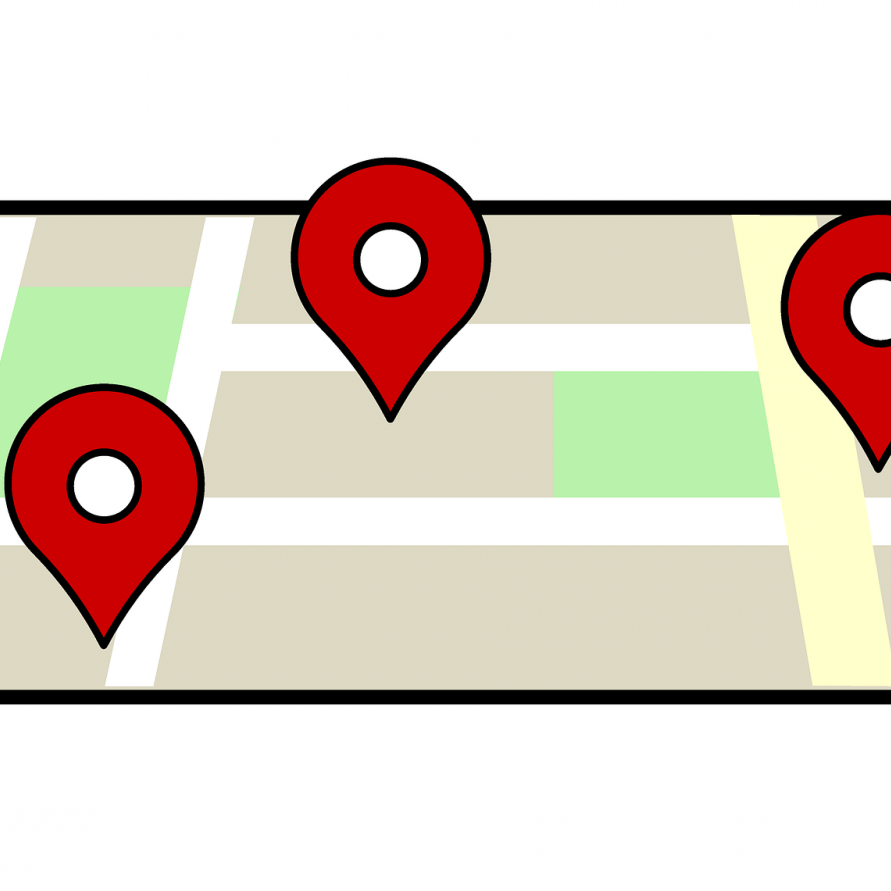
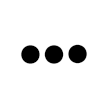

Type System
Let's have fun with “Type System”
Let's have fun with “Type System”
Nicolas DUBIEN
2014 - 2017
C++ at Murex
2017 -
TypeScript and C# at Criteo
 dubzzz
dubzzz
 ndubien
ndubien

Mapped
Since 2.1
Conditional
Since 2.8
Inferred
Since 2.8
dubzzz/fast-check
dubzzz/fast-check
Implementing record for our User structure only
A bit more generic
Mapped Types
Since TypeScript 2.1
Like map but for types
Implementing promisify
promisify
{ [K in keyof T]: T[K] }
Moving a step forward with record
Conditional Types
Since TypeScript 2.8
Define types depending on characteristics of others
Implementing StringOrNever
StringOrNever
Moving a step forward with record
Inferred Types
Since TypeScript 2.8
Ask the type system to infer a type for us
Implementing ReturnType
ReturnType
Moving a step forward with record

Mapped tuples
Since TypeScript 3.1
Mapped types for tuples
Implementing tuple
Dummy implementation of tuple
tuple
Questions?
dubzzz
ndubien